Recent Advances in Network Computing
Zhiwei Zhao
zzw@uestc.edu.cn
mobinets @ SCSE, UESTC
| 1. Named Data Network | 2. Turing Awards | 3. Edge Computing |
Two lines
| Recent advances | Turing award winners |
|---|---|
| 1. NDN/SDN/NFV | 1. Stories |
| 2. Edge computing | 2. Interesting works |
| 3. Lectures |
Coursework (60%+40%)
Course work (60%)
one-column, two-page
Sample pdf, Template tex file.
Presentation (40%)
Talk on an existing PhD thesis (recent 3 years, 30+mins).
A roadmap of your thesis plan is a MUST.
Submission
Email: coursework@mobinets.org
Deadline: Nov 15, 2024.
Recent advances
NDN: Named Data Networking.
SDN: Software Defined Networks
NFV: Network Function Virtualization
Edge: Edge Computing
- Cloud in proximity.
- Dispersed and resource constrained.
Named Data Networks
Addressing: IP vs NDN
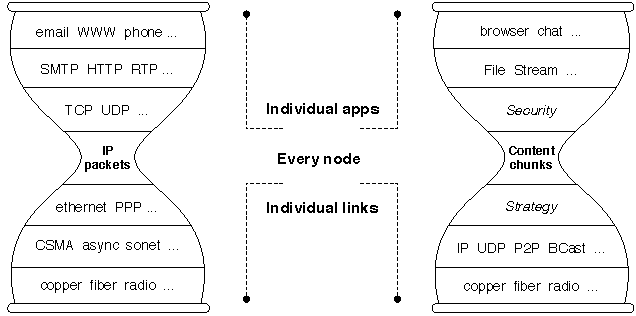
[1] Lixia Zhang et al. Named data newtorking, ACM SigComm 2014.
Software Defined Network
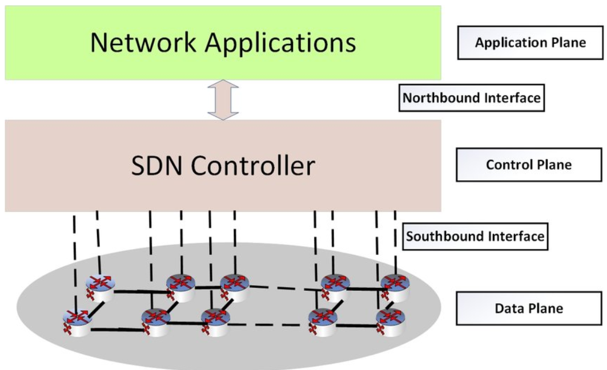
[1] N Gude et al. NOX: Towards an Operating System for Networks. ACM SigComm 2008.
[2] N McKeown et al. OpenFlow: Enabling Innovation in Campus Networks. ACM SigComm 2008.
Network Function Virtualization
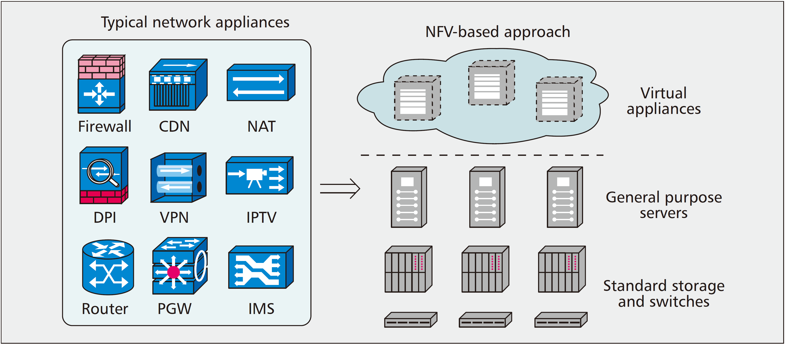
[1] ESTI, Network Functions Virtualisation, White Paper.
[2] Bo Han et al. Network function virtualization: Challenges and opportunities for innovations, IEEE Comm. Mag. 2015.
Edge Computing
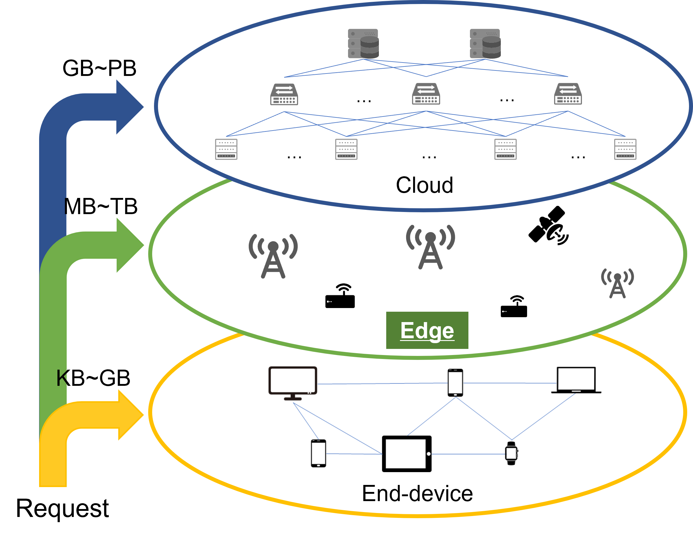
[1] Mahadev Satya et al. The Case for VM-based Cloudlets in Mobile Computing, IEEE Pervasive Computing, 2009.
[2] Mahadev Satya, The Emergence of Edge Computing, Computer, 2017.
[3] J Chen and X Ran, Deep learning with edge computing: A review, Proc. of IEEE, 2019.
👑 Turing Award
The ACM Alan Mathison Turing Award - "Nobel Prize of Computing".
58 Turing Awards
| Field | Awards | Percentage |
|---|---|---|
| Programming lauguage | 16 | 27.6% |
| Computing theory | 13 | 22.4% |
| Network system | 9 | 15.5% |
| Database | 7 | 12.1% |
| AI | 6 | 10.0% |
| CHI | 4 | 6.9% |
| Security | 3 | 5.2% |
Stars in networks (1)
|
Ken Thompson & Dennis Ritchie (IBM, 1983) |
| "For his pioneering effort in programming languages and mathematical notation resulting in what the computing field now knows as APL, for his contributions to the implementation of interactive systems, to educational uses of APL, and to programming language theory and practice" |
Stars in networks (2)
|
Richard M. Karp (UCB, 1985) |
| "Contributions to the theory of algorithms including the development of efficient algorithms for network flow and other combinatorial optimization problems, the identification of polynomial-time computability with the intuitive notion of algorithmic efficiency, and, most notably, contributions to the theory of NP-completeness" |
Stars in networks (3)
|
Fernando J. Corbató (MIT, 1990) |
| "For his pioneering work organizing the concepts and leading the development of the general-purpose, large-scale, time-sharing and resource-sharing computer systems, CTSS and Multics" |
Stars in networks (4)
|
Butler W. Lampson (DEC, 1992) |
| "For contributions to the development of distributed, personal computing environments and the technology for their implementation: workstations, networks, operating systems, programming systems, displays, security and document publishing" |
Stars in networks (5)
|
Vint Cerf & Bob Kahn (UCLA/MIT, 2004) |
| "For pioneering work on internetworking, including the design and implementation of the Internet's basic communications protocols, TCP/IP, and for inspired leadership in networking" |
Stars in networks (6)
|
Charles P. Thacker (Microsoft, 2009) |
| "For his pioneering design and realization of the Xerox Alto, the first modern personal computer, and in addition for his contributions to the Ethernet and the Tablet PC" |
Stars in networks (7)
|
Leslie Lamport (Microsoft, 2013) |
| "For fundamental contributions to the theory and practice of distributed and concurrent systems, notably the invention of concepts such as causality and logical clocks, safety and liveness, replicated state machines, and sequential consistency" |
Stars in networks (8)
|
Tim Berners-Lee (MIT/WWW, 2016) |
| "For inventing the World Wide Web, the first web browser, and the fundamental protocols and algorithms allowing the Web to scale" |
Stars in networks (9)
|
Avi Wigderson (Prinston, 2023) |
| "For reshaping our understanding of the role of randomness in computation, and for decades of intellectual leadership in theoretical computer science" |
On our stage..
|
Vint Cerf & Robert Kahn (2004) |
Richard M. Karp (1985) |
Leslie Lamport (2013) |
🤔 Explore their problems |
📜 Seminal works |
🎤 Stories and Interviews |
From "houses" to glasses
ENIAC, 170m2, 5,000 simple additions per sec |
|
Smart glass, 130cm, 10 TFLops |
From weeks to minutes
A team working for weeks |
|
One app, several minutes |
Network ≈ Blackhole!
More and more apps become networked
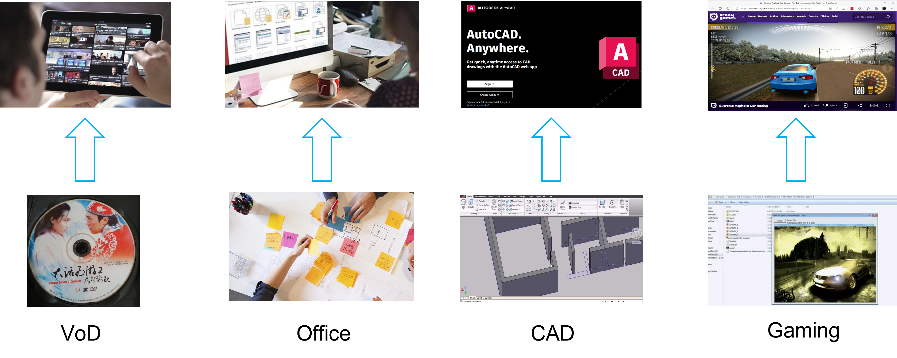
Overleaf, cloud games, cloud native apps, etc.
Reason?
Human desires: Service close, cost away
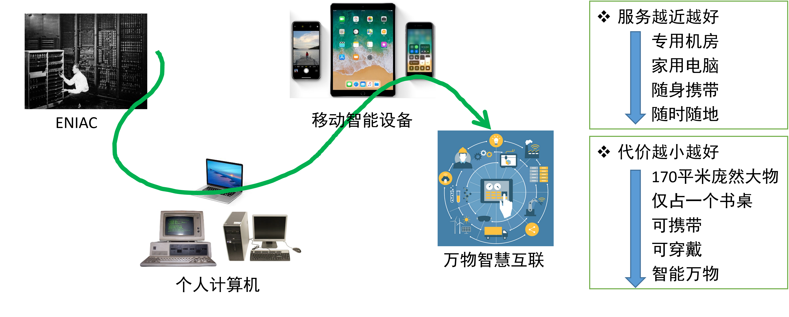
Driver: Evolutional Internet
Inter...net?
Inter意为 ...之间
| Interaction | 互动、交流 |
| International | 国际的、跨国的 |
| Internet | 跨...网的？？ |
Internet's essential goals
Addressing & Switching
* Internet and Telecommunication network？
Interconnected networks
| 网络类型 | 带宽分配Mbps | 占比% |
|---|---|---|
| 中国电信 | 4,537,680 | 50.72 |
| 中国联通 | 2,234,738 | 24.98 |
| 中国移动 | 1,997,000 | 22.32 |
| 中国科技网 | 115,712 | 1.29 |
| CERNET中国教育 和科研计算机网 |
61,440 | 0.69 |
| 总计 | 8,946,570 | 100 |
中国科技网
Inet vs Tnet
- Internet wishes: Inter-connections (IETF, IEEE)
- Tele. Net wishes: Business (ITU, 3GPP)
- Relationships
- Tnet is part of Inet
- Inet wants more networks
- Tnet wants more users
* 全球与漂亮国？
Advances in Internet
📌 Addressing
- Content centric network
- Named Data Network
🍻 Switching
- Quality of Service
- Quality of Experience
- End-to-end requirements
News in various networks
- 3G/4G/5G/6G
- Orbital
- Visible light
- Low-power
Novel Information and Communication Theories, and new networking technologies driven by them.
Telecommunications
| Name | Bandwidth | Coverage |
|---|---|---|
| 3G | 2Mbps | 2-5km |
| 4G | 100Mbps | 1-3km |
| 5G | 1Gbps | 50-300m |
| 6G | 1Tbps | 10m |
Bandwidth↗ Coverage↘ Mobility↗
Apps are dragged into network as the end-to-end latency decreases and throughput increases.
Network computing
Centralized🔁Distributed
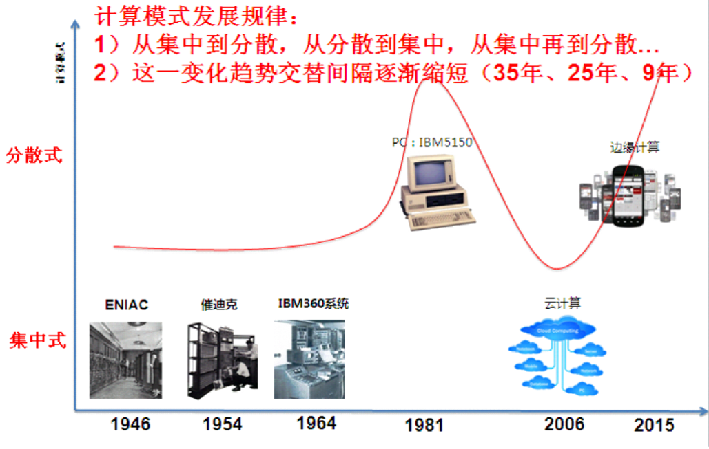 |
|
| * 刘云新. 智能边缘计算中的挑战和机遇.中国计算机学会通讯 2021.09. | * 汪学海等. 边缘计算技术研究报告. 中科院计算所 信息技术与信息化前瞻FIAR-02. 2018.02. |
合久必分，分久必合？
Per-app Evolution
| 计算服务 | 幼苗期 | 发育期 | 成熟期 | |
|---|---|---|---|---|
| 办公软件 | Office | 初代仅支持i286/i386、Windows系统(1990) | 功能逐渐丰富 硬件与系统门槛逐渐降低 网络条件向体验要求逼近 |
Office Online |
| Photoshop | PS2.5仅支持当时最新的i386/i486(1990) | Photopea | ||
| 开发软件 | Matlab | 稳定版V3.5仅支持当时最新的i386/i486(1990) | Matlab online | |
| Visual studio | 安装需3张CD，要求最新i486或Pentium(1997) | VS online | ||
| AutoCAD | V1.0需要当时最新的IBM CGA 显卡(1982) | AutoCAD Web App | ||
| 3D视频游戏 | 新型大型3D游戏仅支持最强GPU/CPU | 网络运行3D游戏 | ||
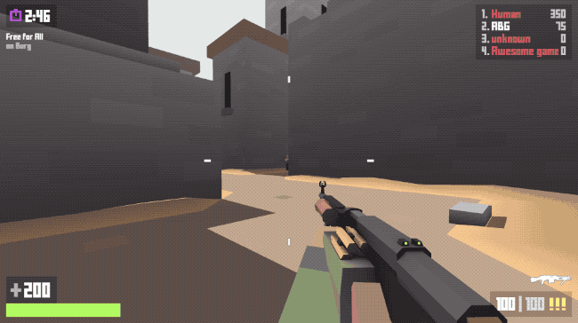 |
||
| 网页版GTA | 网页版射击 | 网页版极品飞车 |
Grow ripe
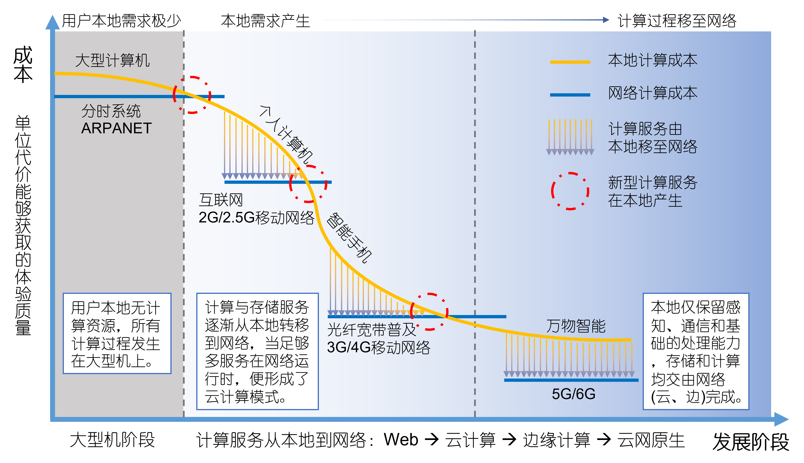
[1] 赵志为, 《关于网络化计算模式的重新思考》, 中国计算学会通讯 (CCCF), 2023.
[2] 赵志为, 闵革勇, 《边缘计算：原理、技术与实践》, 机械工业出版社, 2021.
Tech. vision
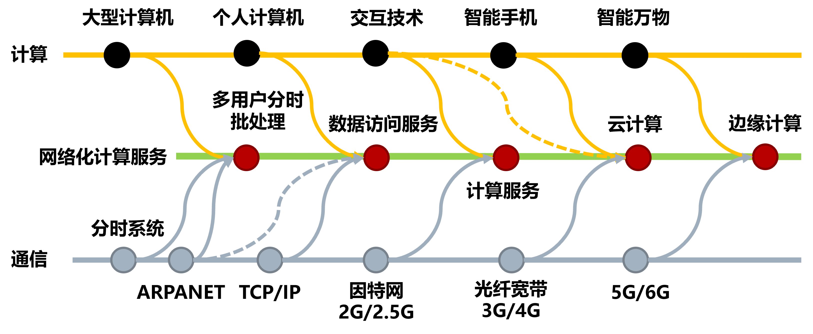
Embedding each other
- C → N: SDN、NFV
- N → C: Cloud、Edge、D2D/D4D
Edge computing
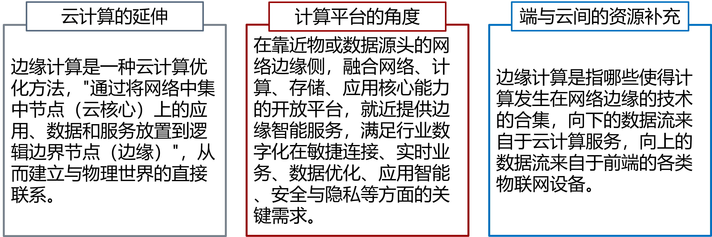
边缘计算是一种计算资源与用户接近、计算过程与用户协同、整体计算性能高于本地和云计算的计算模式，是实现无处不在的“泛在算力”的具体手段。
Edge architecture
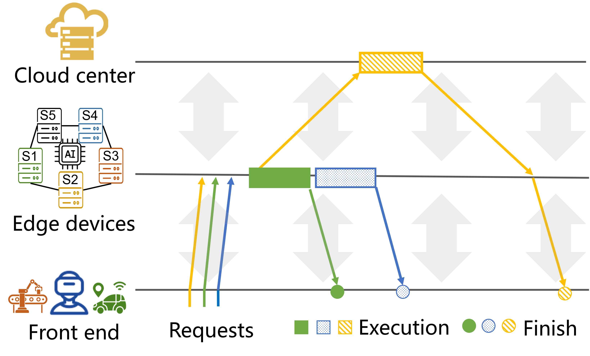
Needs
Internet-of-Things
More "things" are getting smart, with increasing computational needs.
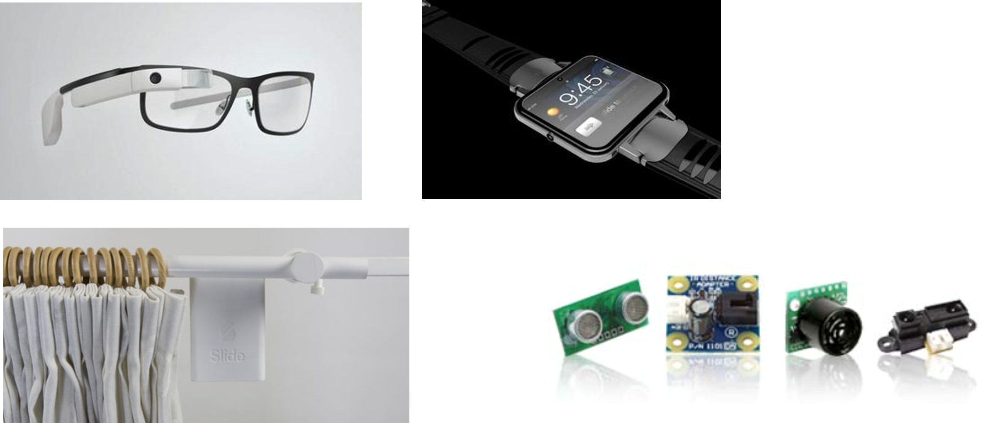
Internet-of-Things
IoT Brief History
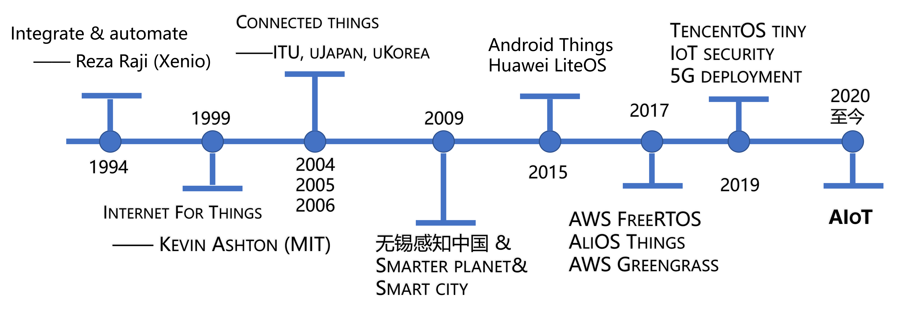
📥 Build a network for things
🔗 Connect things into a network
🌃 Connected everything
IoT Essense
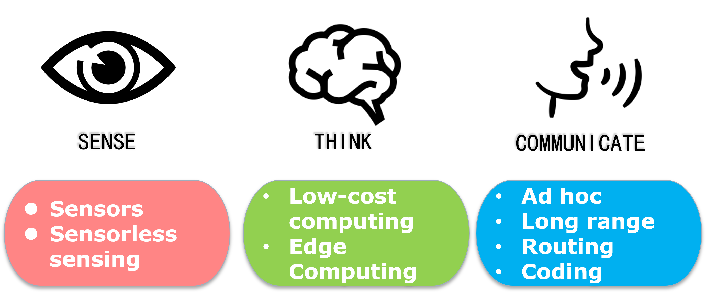
IoT-Human gap mainly lies in sensing and computing.
AI+IoT=AIoT
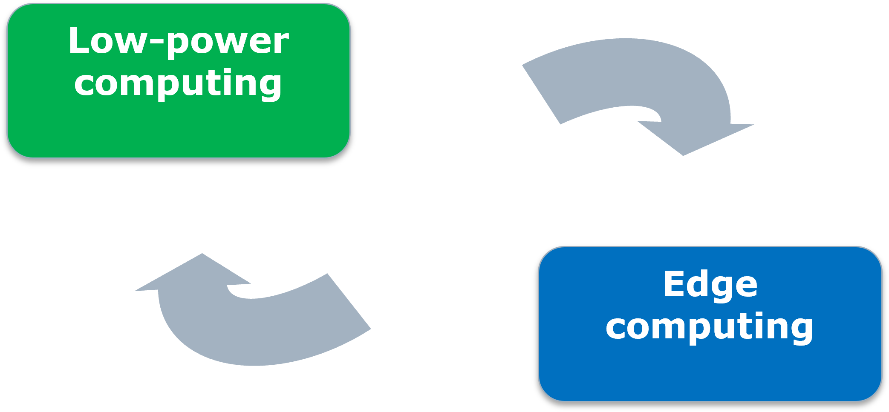
Advances in network brings computing on board.
| 🏡IoT | 🔄Link | 🖥Server |
|---|---|---|
| Offloading decisions | Task transfer | Task processing |
| Analysis/divisions | Multi-access | Service management |
A brief history of edge
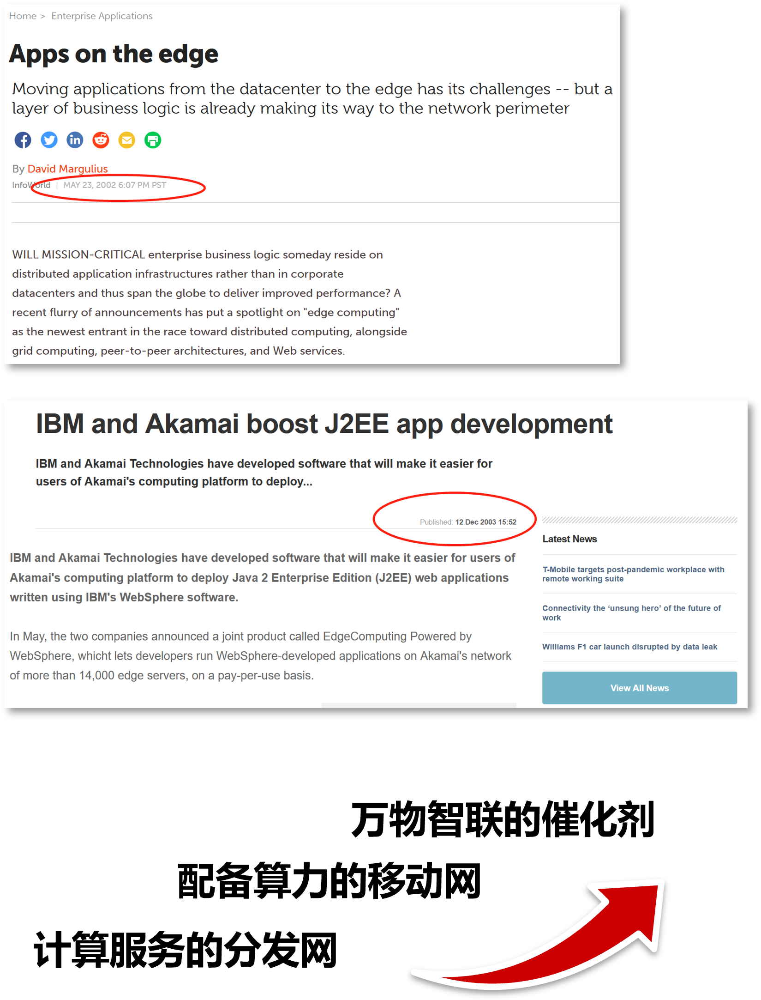 |
|
Gartner's view
| Year | Keywords | Stage |
|---|---|---|
| 2019 | Edge AI/Analytics | Peak of inflated expectations |
| 2020 | Low-cost computers at edge | Innovation trigger |
| 2022 | Industrial Cloud/Edge | Innovation trigger |
| 2023 | Edge AI | Trough of disillusionment |
| 2024 | Edge AI | Peak of inflated expectations |
* TinyML, Embedded AI, Lightweight ML, etc.
* Gartner's Hype Cycle.
New features (1)
Wireless connections matter
| Name | Bandwidth | Coverage |
|---|---|---|
| 3G | 2Mbps | 2-5km |
| 4G | 100Mbps | 1-3km |
| 5G | 1Gbps | 50-300m |
| 6G | 1Tbps | 10m |
*60km/h car brake: 50ms≈1m，10ms≈20cm，1ms≈20mm
New features (2)
Scene oriented system design
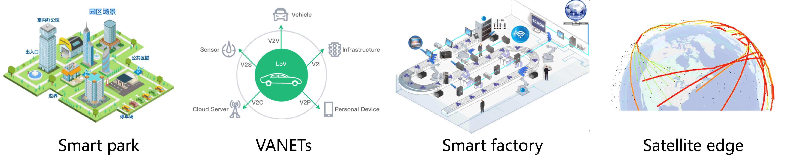
- Collaborate and offloading in Unreliable environment
- Low-cost computing power coverage
- Service deployment with hirachical dynamics
New features (3)
Uncertainties everywhere
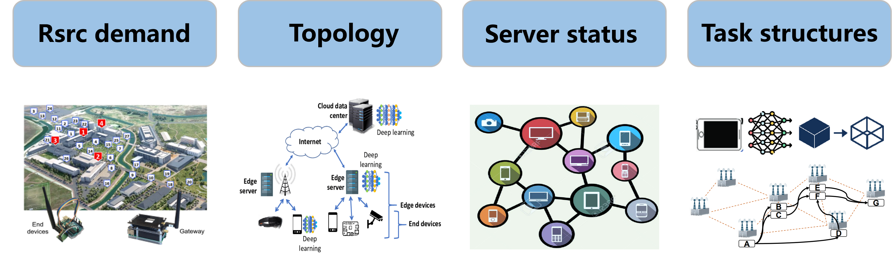
- IoT demands
- Physical/logical Topology
- Resource distribution
- Task structures
EdgeAI or CloudAI?
Distinguishment: Scenarios matter.
- Access & Offloading: Ambient and unreliable.
- Deployment: High cost
- Architecture: Cloud-edge-end
* Integrating sensing, communication and computation.
New features (4)
Mobility is a boss-level challenge.
| Scene | Speed | Handovers |
|---|---|---|
| AutoDrive+5G/6G | 60 KM/h | 5 AP/m |
| HighRail+5G/6G | 300 KM/h | 25 AP/m |
| AR/VR+5G/6G | 4 KM/h | 0.33 AP/m |
| Wander+WiFI6/7 | 4 KM/h | 0.33 AP/m |
🧐Where are the impacts?
service handover, cooperation, system deployment, service discovery, ...
Explosive app growth
Almost all services can be trasferred to the edge
|
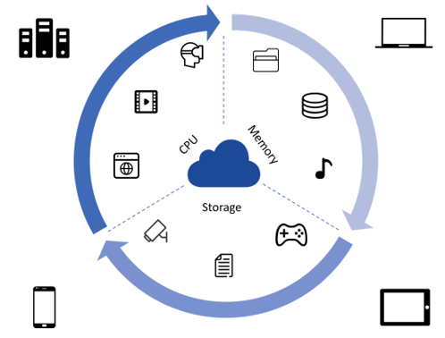 |
|
Exciting new terms
Local LLMs
Embodied intelligence
Telepresence
AIoT/Edge Papers
- SigComm'18, AuTO: Scaling Deep Reinforcement Learning for Datacenter-Scale Automatic Traffic Optimization
- SOSR'21, Accelerating Distributed Deep Learning using Multi-Path RDMA in Data Center Networks
- SigComm'21, MimicNet: Fast Performance Estimates for Data Center Networks with Machine Learning
- SigComm'20, Interpreting Deep Learning-Based Networking Systems
Some more
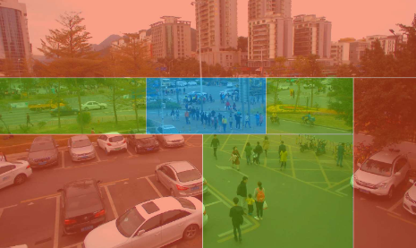

- MobiCom'21, EMP: Edge-assisted Multi-vehicle Perception
- MobiCom'21, Flexible High-resolution Object Detection on Edge Devices with Tunable Latency
- MobiCom'19, Edge Assisted Real-time Object Detection for Mobile Augmented Reality
Interesting videos🚴♀️
AI + Wireless + Mobile (1)
FL: similarity aware cluster for activity recognition.
remote gesture: real time graph analysis & control.
mole: sensing input with smartwatch.
AutoDrive1, AutoDrive2, AutoDrive3.
gesture1, gesture2, gesture3: sensing gestures.
mobile AR: mobile augmented reality (early).
Cable robot, userview: 360 VR.
mblocks: self learning, sensing and navigating.
pocket edge: low cost edge server using smartphones.
UAV network: Self organizing and target tracking.
AI + Wireless + Mobile (2)
Apple Adhoc: Apple wireless direct link.
Throughput fairness: Tradeoffs in mobility platforms.
Underwater VLC: novel communications.
UAV side channel: Audio side-channel for UAVs.
3D human mesh, Crowd counting: sensing wirelessly
IoT democratization: hmm.. interesting topic.
Find missing objects: hybrid use of vision and sensing.
Liquor detect: sensing with graphics.
Volumetric video: film industry talk.
GPT bot: Robot dog with GPT AI.
Embodied intelligence.